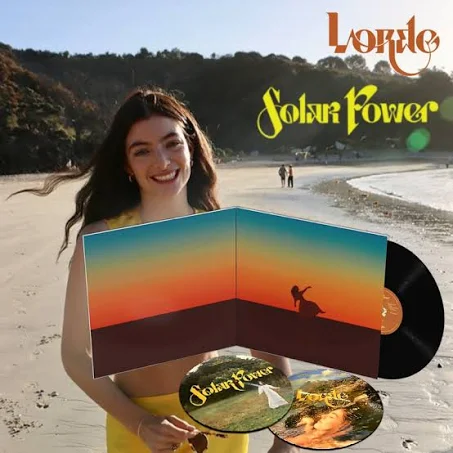

Vinyl 1
Price: R150,00
Solar Power is the third studio album by New Zealand singer-songwriter Lorde. It was released on 20 August 2021, by Universal Music New Zealand. Lorde wrote and produced the album with American musician Jack Antonoff, with whom she also worked on her second studio album, Melodrama.